如何使用git branch分支
我一開始應用GIT的時候還不會用到分支，
但隨著專案需要提供兩種版本時，這時不得不用了。
當要進階使用Git Branch時，首先你得必須要會看gitk，
使用gitk --all來呼叫gitk，我在初始專案只放入.gitignore檔案，如下圖
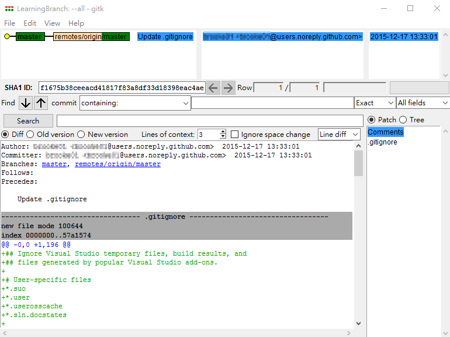
但你會發現此時的命令提示字元為何被鎖住，
那請先關掉 gitk，改打 gitk --all& 指令來讓 gitk 在背景執行即可。
先來看看這reposity裡面有什麼分支，輸入git branch -a可以看到所有包括本機端與雲端的分支，
會發現列出 *master 與 remotes/origin/master兩項分支，
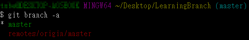master前的「*」星號代表現在我們位於哪個分支，
而檔案路徑尾端上的淡藍色「(master)」字眼也充分表示我們位於哪個分支上下指令，
注意master是主幹也是一個分支喔，
而帶有remotes紅字的分支是雲端上的分支，以github為例由於本機資料最後會同步到雲端，
所以*master 與 remotes/origin/master兩分支是相等的，接下來我們會關注在本機端就好。
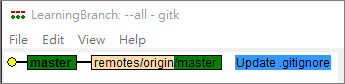再來說明目前gitk上的線圖所代表的意思，
黃圈代表我們現在專案進度位於哪一點，
注意那粗體的本機master分支，代表我們現位於該分支上開發。
左邊綠色本機的master與右邊綠色雲端的master目前為相同內容，
所以才位於同一條線上。
藍色為被選取的註解，未選取是底色白色的。
使用git branch 分支名稱 來新開一個分支，如下已新開一個名為homo分支
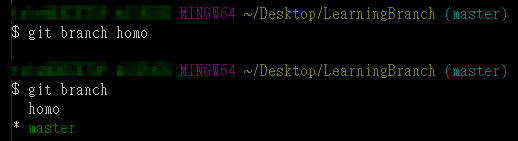
而gitk上的線圖為
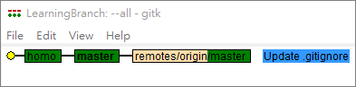
接下來我們要切到homo分支去開發，使用git checkout 分支名稱，
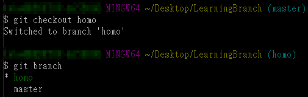
我們於homo分支新增檔案並commit然後再來看gitk
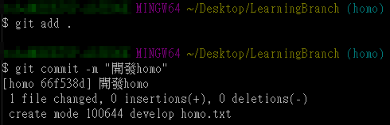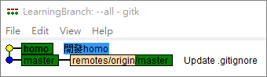
再次開發homo分支看看gitk會長什麼樣子
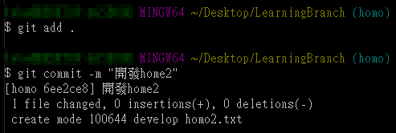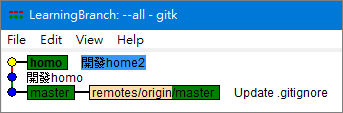
換切到master分支(也是主幹)
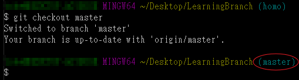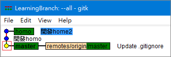
那我們也在master開發一下
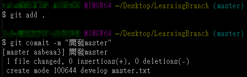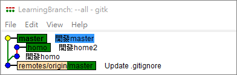
再次開發master
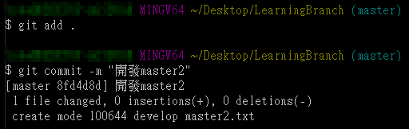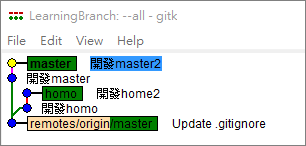
既然有分就有合嘛，所以我們決定以homo分支為主(其實應該要認master為主幹比較不會搞混，
但為了表示master除了是主幹也是分支，所以我故意的XD)，將master分支merge進來，
使用git merge 分支名稱 指令
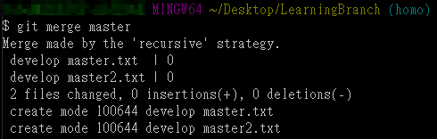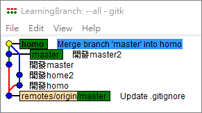而再查詢經merge之後分支是否有減少，答案是沒有master分支還在，
但此時我們會認定現在就是以homo為主幹，沒必要的話不用去理master分支，
因為master分支的所有內容homo主幹都有了，反而master分支沒有homo分支的內容。
接下來為了展現如何使用rebase，我們再開一個分支pan，
而homo與pan分支各自開發了一段時間，如下
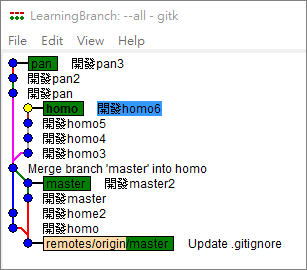如果我想讓pan保有homo分支最新的狀態時則，
使用git rebase 分支名稱指令，
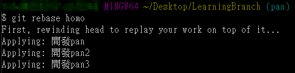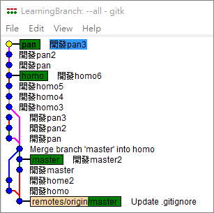這樣pan分支就有homo分支最新的內容了，
此時但homo分支可沒有pan分支所開發的內容(pan、pan2、pan3)喔。
參考資料：